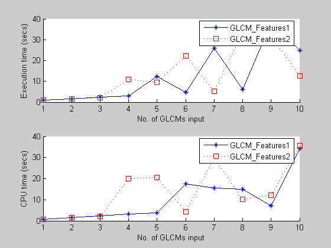
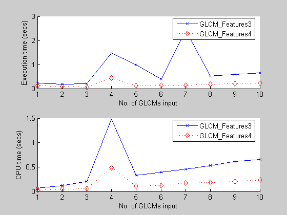

clear all
offsetmat = [];
noffs = 10;
for i = 1:noffs
offsetmat = [offsetmat; i*[1 0]];
I = imread('circuit.tif'); GLCM2 = graycomatrix(I,...
'NumLevels',64,'Offset',offsetmat);
tic; stats1 = GLCM_Features1(GLCM2,0); t1(i) = toc;
clear stats1
t = cputime; stats1 = GLCM_Features1(GLCM2,0); ct1(i) = cputime-t;
tic; stats2 = GLCM_Features2(GLCM2,0); t2(i) = toc;
clear stats2
t = cputime; stats2 = GLCM_Features2(GLCM2,0); ct2(i) = cputime-t;
tic; stats3 = GLCM_Features3(GLCM2,0); t3(i) = toc;
clear stats3
t = cputime; stats3 = GLCM_Features3(GLCM2,0); ct3(i) = cputime-t;
tic; stats4 = GLCM_Features4(GLCM2,0); t4(i) = toc;
clear stats4
t = cputime; stats4 = GLCM_Features4(GLCM2,0); ct4(i) = cputime-t;
end
diff_err12 = diffStructFields(stats1, stats2, noffs);
diff_err13 = diffStructFields(stats1, stats3, noffs);
diff_err14 = diffStructFields(stats1, stats4, noffs);
figure; subplot(2,1,1);
hold on
plot(t1,'-*');
plot(t2,':sr');
xlabel('No. of GLCMs input');
ylabel('Execution time (secs)');
legend('GLCM\_Features1','GLCM\_Features2');
hold off
subplot(2,1,2);
hold on
plot(ct1,'-*');
plot(ct2,':sr');
xlabel('No. of GLCMs input');
ylabel('CPU time (secs)');
legend('GLCM\_Features1','GLCM\_Features2');
hold off
figure; subplot(2,1,1);
hold on
plot(t3,'-x');
plot(t4,':dr');
xlabel('No. of GLCMs input');
ylabel('Execution time (secs)');
legend('GLCM\_Features3','GLCM\_Features4');
hold off
subplot(2,1,2);
hold on
plot(ct3,'-x');
plot(ct4,':dr');
xlabel('No. of GLCMs input');
ylabel('CPU time (secs)');
legend('GLCM\_Features3','GLCM\_Features4');
hold off
 